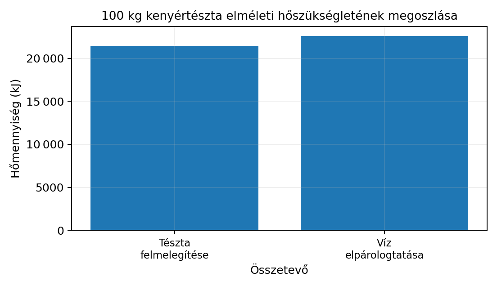

A pék hajnalban már a harmadik kemencetöltetet süti. A kenyér szép, a vevő elégedett, de a hónap végi gázszámla magas. A főnök azt kérdezi: „Mennyi hőre van egyáltalán szüksége a tésztának, és mennyi vész kárba?” Ebben az alfejezetben megtanuljuk, hogyan becsüljük meg egy kemencetöltet elméleti hőszükségletét, hogyan számoljunk a gyakorlati veszteségekkel, és hogyan értékeljük a kemence termikus hatásfokát. Ez nemcsak energiaköltség-számítás: segít megérteni, miért nem mindegy, hogyan fűtünk, mikor nyitunk ajtót, és mennyi gőzt engedünk a kamrába.
Képzeljünk el egy 200 kg-os kenyértésztát, amely 30 °C-on kerül a kemencébe, és addig sül, amíg a bélzet 97 °C körülire melegszik. Sütés közben a tészta vízvesztesége – példánkban 8% – gőzként távozik. A tészta felmelegítéséhez és a víz elpárologtatásához együttesen körülbelül 79 000 kJ hő kell (a tészta fajhője 3,2 kJ/(kg·°C), tanulási példa; felmelegítés: 200 · 3,2 · 67 = 42 880 kJ; párolgás: 16 · 2260 = 36 160 kJ). Ez a hasznos, „elméleti” hő. A kemence azonban nem csak a tésztát melegíti: a falazat, a kocsi, a tálcák, a kiáramló gőz és a nyitott ajtón távozó levegő is visz el hőt, ezért a valós fogyasztás ennél nagyobb. Ha a kemence gázfogyasztása 160 000 kJ, akkor a hatásfok 79 040/160 000 ≈ 0,494, vagyis kb. 49%.
A hőtani számításokban az energiát és a hőmennyiséget joule-ban (J), kilojoule-ban (kJ) vagy megajoule-ban (MJ) mérjük. Az elektromos energiát az üzemben általában kilowattórában (kWh) mérjük. Az átszámítás:
A teljesítmény () az időegység alatt átadott vagy felvett energia. Ha egy kemence fűtőteljesítménye (kW), és ideig fűt, akkor az elfogyasztott energia:
Ezt az összefüggést használtuk az Alapműveletek, mértékegységek és átváltások alfejezetben is.
Egy tipikus hiba. A kWh-t gyakran „teljesítménynek” mondják, pedig az energia. A kW a teljesítmény. A pék számára a lényeg: a gáz- vagy villanyszámla energiát számláz, a kemence adattáblája pedig teljesítményt ad meg.
Definíció. A fajhő az a hőmennyiség, amely anyag hőmérsékletét -kal emeli. Jele , mértékegysége .
Ha tömegű anyagot fajhővel, hőmérséklet-különbséggel melegítünk, akkor a szükséges hő:
ahol a hőmennyiség kilojoule-ban, kilogrammban, a fajhő -ban, pedig a hőmérséklet-különbség -ban.
A sütőipari anyagok fajhője hozzávetőlegesen:
| Anyag | Fajhő, () | Megjegyzés |
|---|---|---|
| Víz | ismert táblázati érték | |
| Kenyértészta (kb. 40–45% víz) | – | a keverési szabályból becsülve (ellenőrizendő: szakkönyvi adat); a példákban az egyszerűség kedvéért 3,0–3,2 szerepel (tanulási példa) |
| Száraz liszt | – | tanulási példa |
| Acél (lemez, kocsi) | – | tanulási példa |
| Levegő (állandó nyomáson) | kerekített táblázati érték |
Figyelem. A táblázat értékei tanulási példák, nem hatósági előírások. A pontos fajhőt mérés vagy a gyártói adatlap adja meg (ellenőrizendő: az üzemben használt tészta összetétele, kocsik és lemezek anyaga).
Definíció. A párolgáshő az a hőmennyiség, amely folyadék elpárologtatásához szükséges az adott hőmérsékleten és nyomáson. A víz párolgáshője -on, légköri nyomáson körülbelül (tanulási példa, táblázati érték).
Ha a sütés során tömegű víz távozik gőzként, akkor az ehhez szükséges hő:
ahol a víz párolgáshője, -ban.
Megjegyzés. A sütési veszteség (sülési veszteség) nagy része víz, ezért a párolgáshővel dolgozunk. A tészta valódi vízvesztesége fokozatosan, nem egyetlen hőmérsékleten következik be, de ez az egyszerűsített modell alkalmas becslésre.
Az elméleti hőszükséglet az a hőmennyiség, amelyet magának a tésztának kell felvennie ahhoz, hogy a sütés során a kívánt bélhőmérsékletet elérje, és a sütési veszteségként távozó víz elpárologjon. Ebben a modellben nincs veszteség a kemence falán, a kocsin, a lemezen vagy a kiáramló levegőn.
A levezetés két fő tagból áll:
A párolgáshő:
Az elméleti hőszükséglet ezek összege:
Továbbvitt eredmény. Az itt bevezetett elméleti hőszükséglet, a fajhő és a párolgáshő fogalmát, valamint a összefüggést használjuk a Sütési eljárások, különleges sütés, átsültség és elősütés alfejezetben, amikor a különböző sütési módok hőhatását és az átsültség energiaigényét hasonlítjuk össze.
A valódi kemencében a bevitt hő egy része nem a tészta hasznos felmelegítésére fordítódik. A legfontosabb veszteségek:
| Veszteségforrás | Miben nyilvánul meg? | Hogyan csökkenthető? |
|---|---|---|
| Falazat, ajtó hővesztesége | A kemence külső fala meleg, az ajtó körül huzat van | jó szigetelés, tömítések ellenőrzése |
| Kocsi, tálca, lemez felmelegítése | A betárolt eszközök hőt vesznek fel, kilépéskor elviszik | minél kisebb holtsúly, a kemence tartályát előmelegítve tartani |
| Gőz kiáramlás | A gőzöléshez bevezetett, majd távozó gőz hőt visz | gőzt csak a szükséges ideig, jól záró kemencében használni |
| Ajtónyitás | Hideg levegő be, forró levegő ki | nyitvatartási idő csökkentése, gyors vetés |
| Felesleges felfűtés/hűtés | Üres kamra fűtése, túlzott hőmérséklet | optimális sütési sorrend, terhelés kihasználása |
Meghatározás. A gyakorlati hőszükséglet – vagy bevitt hő – az a tényleges hőmennyiség, amelyet az energiahordozóval (gáz, olaj, elektromos áram) a kemencébe juttatunk ahhoz, hogy a tészta megsüljön. Jele .
A gyakorlati hőszükséglet soha nem lehet kisebb az elméletinél; a kettő viszonyát a termikus hatásfok fejezi ki.
Definíció. A termikus hatásfok a hasznos módon hasznosított hő és a bevitt hő aránya, százalékban kifejezve:
A sütés egyszerűsített modelljében a hasznos hő az elméleti hőszükséglet: . A bevitt hő a kemence által ténylegesen elfogyasztott energia: . Így:
Ha a hatásfokot tizedestörtként használjuk, akkor , és a százalékos alak .
A gyakorlati hőszükségletet a hatásfokból is kifejezhetjük:
vagy tizedestörtben:
Tipikus sütőipari irányszámok. Egy jól karbantartott, teljes töltéssel üzemelő kenyérkemence termikus hatásfoka – tanulási példaként – 40–60% között van; elektromos vagy gázüzemű kemencéknél ez típusonként és gépkialakításonként eltérő (ellenőrizendő: a konkrét kemence gyártói adatlapja, üzemi mérések, aktuális energiahatékonysági irányelvek). Ha a hatásfok 50%, akkor az elméleti hő kétszeresét kell bevinni: 100 kJ hasznos hőhöz 200 kJ bevitt hő kell.
Egy kevert péksütemény-tésztából kerül a kemencébe, hőmérséklete . A sütés végén a bélzet hőmérséklete (a kenyér és kelt péksütemény átsültségi határa). A tészta fajhője (tanulási példa). Mennyi hő kell csak a felmelegítéshez?
Adott: - - - -
Keresett: felmelegítési hő.
Képlet:
Behelyettesítés:
Ellenőrzés. A hőmérséklet-különbség , a mértékegységek kiejtve: . A kerekítve , ésszerű egy 50 kg-os tészta felmelegítéséhez. ∎
Egy tömegű kenyértésztát sütnek. A tészta belépő hőmérséklete , a sütés végi bélhőmérséklet . A tészta fajhője (tanulási példa). A sütési veszteség a tésztatömeg 10%-a. A víz párolgáshője . Számítsuk ki az elméleti hőszükségletet.
Adott: - - - , - -
Keresett:
1. lépés – Felmelegítési hő:
2. lépés – Vízveszteség tömege:
3. lépés – Párolgáshő:
4. lépés – Elméleti hőszükséglet:
Ellenőrzés. A párolgási tag kicsit nagyobb, mint a felmelegítés – ez jellemző, mert a víz elpárologtatása sok hőt igényel. A körülbelül , vagy (mert ). ∎
Az alábbi ábra a fenti példa hőszükséglet-megoszlását mutatja.

Tegyük fel, hogy az előző tészta kisütéséhez a kemence földgázt fogyasztott. A földgáz fűtőértéke tanulási példaként . Számítsuk ki a kemence termikus hatásfokát.
Adott: - - - (tanulási példa, ellenőrizendő: a tényleges gázminőség)
Keresett:
1. lépés – Bevitt hő:
2. lépés – Hatásfok:
Ellenőrzés. A a sütőipari kemencékre jellemző tartományon belül van (40–60%), tehát a példa ésszerű. A számítás menete és a mértékegységek rendben. ∎
A 2. és a 3. példa együtt a kemencetöltet teljes hőmérlegét adja. Az alábbi ábrán a bal oldali oszlop a bevitt hő (85 000 kJ), amelyből 21 440 kJ a tészta felmelegítésére, 22 600 kJ a víz elpárologtatására jut, a maradék 40 960 kJ pedig veszteség (kemencefal, füstgáz, kocsi, lemez, ajtónyitás). A jobb oldali oszlop az elméleti hőszükséglet: a hatásfok a két oszlop magasságának aránya.
Az ábrán az is látszik, hogy a hatásfok soha nem lehet 100 % fölött: ha a számítás ilyet ad, a bevitt és az elméleti hőt felcserélték, vagy hibás a mértékegység. A HTML-kiadás hőmérleg-kalkulátorában a tésztatömeg, a hőmérsékletek, a fajhő, a sütési veszteség és a bevitt energia (gáz vagy villamos energia) állítható; a feladatok eredményei így ellenőrizhetők.
Egy pékség új kemence vásárlását tervezi. A gyártói adatlap szerint a kemence termikus hatásfoka (tanulási példa). Egy kemencetöltet elméleti hőszükségletét -ra becsülik. Mennyi lesz a becsült gyakorlati hőszükséglet, és közelítőleg mennyi villamos energiát kell hozzá biztosítani, ha elektromos fűtésű a kemence?
Adott: - -
Keresett: és
Képlet és behelyettesítés:
Kerekítve: .
Az elektromos energia kilowattórában:
Ellenőrzés. A hatásfok 55%, tehát a bevitt hő kb. 1,82-szerese az elméletinek. A és a ésszerű. A kerekítés a feladat szempontjából megfelelő. ∎
A termikus hatásfok nem állandó üzemi adat: a pék napi döntései befolyásolják. Az alábbi intézkedések – a tapasztalat szerint – javíthatják a hatásfokot vagy csökkenthetik a tényleges energiafelhasználást. A számok mindig a konkrét üzemre és kemencére igazak (ellenőrizendő: az üzemi energiamonitoring és a gyártói ajánlások).
Higiénia. A kemence belső lerakódása nemcsak energiaveszteség, hanem élelmiszer-biztonsági kockázat is lehet: a leégett tésztamaradék idegen anyagként szennyezheti a következő terméket, és kedvezhet a káros mikroorganizmusok elszaporodásának. A tisztítás csak leállított, lehűlt, áramtalanított kemencében végezhető. Az égőbeállítást, gázszerelést a pék soha nem maga végzi, hanem megfelelő jogosultságú szakemberrel végezteti.
Gépbiztonság. A kemence fűtési rendszerének, gázégőjének, elektromos kapcsolószekrényének beállítása, javítása, az égő leszerelése a pék hatáskörén kívül esik. A tanuló a kemencét csak betanítás után, felügyelettel kezelheti; a fűtést nem szereli. A gázszivárgás gyanúját azonnal jelenteni kell, és a kemence környékéről el kell távolítani a gyújtóforrást. A részletes előírásokat Olaj- és gázégők, biztonsági automatikák és a kemence munkavédelme alfejezet tárgyalja.
Egy kisüzemi pék a kemence gázfogyasztását méri, mert a havi számla 15%-kal magasabb, mint a korábbi években. Ugyanazt a kenyeret ugyanabban a kemencében süti. A mérőóra adataiból kiszámolja: egy -os kemencetöltet elméleti hőszükséglete körülbelül , a fogyasztott gázmennyiségből számolt bevitt hő pedig volt. A hatásfok:
Korábban ugyanez a kemence 55–60% hatásfokot ért el. A pék megvizsgálja a kemence ajtaját, és felfedezi, hogy a tömítés sarkán egy repedés tátong; a forró levegő folyamatosan áramlik kifelé. A tömítés cseréje után a hatásfok visszaáll 56% körülire, a gázszámla csökken. Tanulság: a hőszükséglet-számítás és a hatásfokfigyelés nem irodai papírmunka, hanem üzemi hibakereső eszköz.
A minőségbiztosítás szempontjából a kemencének nemcsak a hőmérsékletét, hanem a hasznos hőfelhasználást is célszerű nyomon követni. Ha a hatásfok hirtelen csökken, az jelenthet tömítéshibát, égőproblémát vagy a kemence túlterhelését. A pék nem laboratóriumi műszerekkel dolgozik, de a napi fogyasztás, a sütési idő és a termék minősége közötti összefüggés is árulkodó. A HACCP-rendszerben a sütés CCP-jének kritikus határa a bél maghőmérséklete (tanulási példa: legalább 96 °C); a kemence hőmérséklete műveleti paraméter, amelyet a sütési naplóban rögzítünk. A hatásfok számítása egyiket sem helyettesíti.
1. hiba: a kWh és a kJ összekeverése. Tünet: a 2. példa -ját a tanuló átváltás nélkül kWh-nak veszi, és kWh-t ír kWh helyett (). Az ilyen tévedés óriási energiaköltséget mutat. Ok: az átváltás lépése kimaradt. Helyes gyakorlat: mindig kiírni a mértékegységet, és ellenőrizni a nagyságrendet. , tehát kb. .
2. hiba: a vízveszteség elhanyagolása. Tünet: a pék csak a tészta felmelegítését számolja, a víz párolgáshőjét kihagyja. Eredmény: az elméleti hőszükséglet a valós fele, a hatásfok torz. Ok: a sütés során távozó víz sok hőt visz el. Helyes: mindig becsüljük a sütési veszteséget, és adjuk hozzá a párolgáshőt.
3. hiba: a hatásfokot fordítva számolják. Tünet: , ami 150–200% hatásfokot ad. Ok: a képletben a bevitt és a hasznos hő felcserélése. Helyes gyakorlat: a hatásfok legfeljebb 100% lehet (a veszteségek miatt a gyakorlatban 100% alatt van), tehát a hasznos hő mindig a számlálóban áll.
4. hiba: a fajhőt minden anyagra egyformának veszik. Tünet: a tészta fajhőjét a vízével (4,18) számolják. Ok: nem gondolnak a szárazanyag-tartalomra. Helyes: a kenyértészta fajhője alacsonyabb, kb. 2,7–3,0 kJ/(kg·°C) (becsült érték; a példákban 3,0–3,2-vel számolunk, tanulási példa); ha pontos adat kell, az üzemi mérést vagy gyártói adatlapot kell használni.
5. hiba: a sütési veszteség százalékalapjának kétértelműsége. Tünet: a számítás attól függ, hogy a veszteséget a tésztatömegre vagy a késztömegre vetítjük. Ok: a százalékalap nincs rögzítve. Helyes gyakorlat: a számolás előtt mindig ki kell mondani, mi a 100%. Példánkban a sütési veszteséget a tésztatömegre vetítjük.
1. feladat (A)
Definiáld a fajhőt és a termikus hatásfokot. Mi a különbség az energia
(kJ) és a teljesítmény (kW) között?
2. feladat (A)
Egy
tésztát
-ról
-ra
melegítenek. A fajhő
.
Számítsd ki a felmelegítéshez szükséges hőmennyiséget kJ-ban.
3. feladat (B)
Egy kemencetöltet
tésztát tartalmaz. Belépő hőmérséklet
,
sütés végi bélhőmérséklet
.
A tészta fajhője
,
a sütési veszteség a tésztatömeg 12%-a, a párolgáshő
.
Számítsd ki az elméleti hőszükségletet.
4. feladat (B)
A fenti kemencetöltethez a kemence
földgázt fogyasztott, a gáz fűtőértéke
(tanulási példa). Számítsd ki a termikus hatásfokot.
5. feladat (C)
Egy üzemben azt tapasztalják, hogy az egyik kemence hatásfoka 48%, a
másiké 62%. Ugyanazt a terméket sütik, az elméleti hőszükséglet
töltetenként. Mennyi energiát takarít meg a jobb hatásfokú kemence
töltetenként? Milyen lehetséges okai lehetnek a rosszabb
hatásfoknak?
6. feladat (D)
Egy pék az alábbi adatokat rögzítette: elméleti hőszükséglet
,
elektromos fogyasztás
.
Számítsd ki a kemence hatásfokát, és értékeld, hogy érdemes-e
karbantartást kérni, ha a gyártói adatlap szerint a kemence névleges
hatásfoka 60% (tanulási példa). Milyen további mérést javasolnál?
1. feladat (A)
A fajhő: 1 kg anyag hőmérsékletének 1 °C-kal történő emeléséhez
szükséges hőmennyiség. Jele
,
egysége
.
A termikus hatásfok: a hasznos hő és a bevitt hő aránya, százalékban:
.
Az energia (kJ) a hőmennyiség, a teljesítmény (kW) az időegység alatt
átadott energia:
.
2. feladat (A)
,
,
.
.
3. feladat (B)
Adott:
,
,
,
,
,
.
Felmelegítési hő:
.
Vízveszteség:
.
Párolgáshő:
.
Elméleti hőszükséglet:
.
4. feladat (B)
Bevitt hő:
.
Hatásfok:
.
5. feladat (C)
A rosszabb hatásfokú kemence töltetenkénti bevitt hője:
.
A jobb hatásfokú kemencéé:
.
Megtakarítás:
,
vagyis kb.
.
Ez közel
megtakarítás töltetenként.
A rossz hatásfok lehetséges okai: rossz tömítés, sérült szigetelés,
gyakori ajtónyitás, rossz égőbeállítás, a kemence túlterhelése vagy
alulterhelése, lerakódás a hőcserélő felületen.
6. feladat (D)
Bevitt hő:
.
Hatásfok:
.
A kapott 74% magasabb, mint a gyártói 60%, tehát a kemence
pillanatnyilag jól teljesít, vagy az elméleti becslés túl optimista.
Javasolt további mérés: ellenőrizni a fogyasztásmérő pontosságát, a
termék maghőmérsékletét, a sütési veszteséget, és több ciklus átlagát
venni. Ha a hatásfok később csökken, karbantartást kell kérni.
A sütés elméleti hőszükséglete az a hő, amelyet a tészta felmelegítése és a távozó víz elpárologtatása igényel: . A fajhő () egységnyi tömeg egységnyi hőmérséklet-emeléséhez szükséges hő; a víz párolgáshője -on kb. (tanulási példa). A gyakorlati hőszükséglet a veszteségek – fal, kocsi, lemez, gőz, ajtónyitás – miatt nagyobb. A termikus hatásfok ; a hasznos hő a számlálóban van. A kWh és a kJ közötti átszámítás . A hatásfok javítását szolgálja a kemence teljes kihasználása, az ajtónyitás minimalizálása, a szigetelés karbantartása és a célzott gőzölés. Továbbvitt eredmény: ezeket a hőmennyiségeket és hatásfokfogalmakat használjuk a Sütési eljárások, különleges sütés, átsültség és elősütés alfejezetben a különböző sütési módok energiaigényének és az átsültség hőátadási kapcsolatának elemzésére.